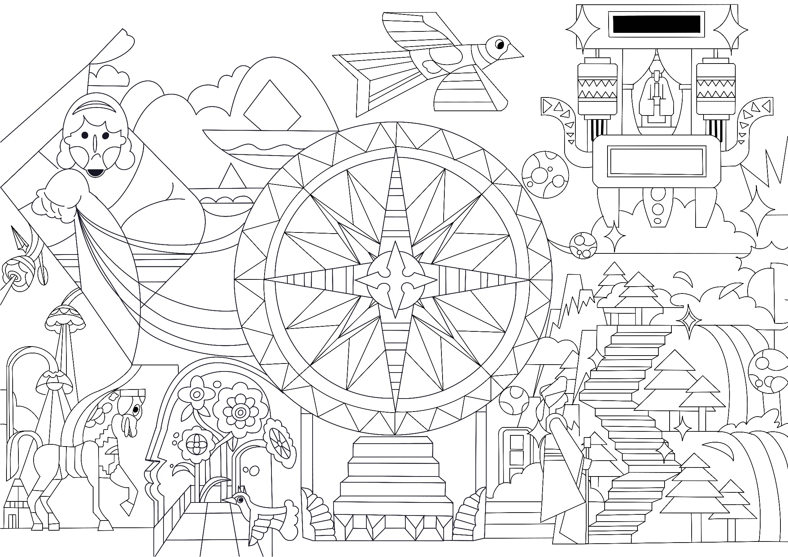
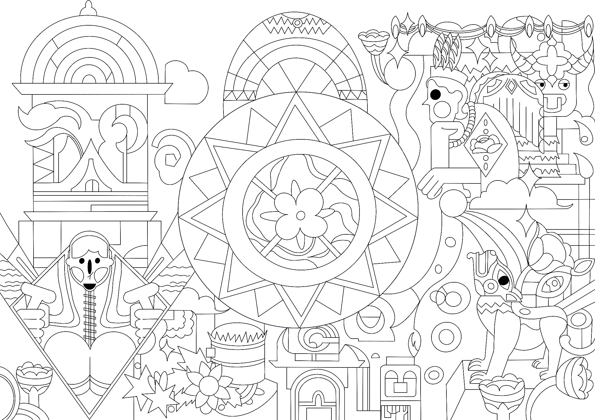
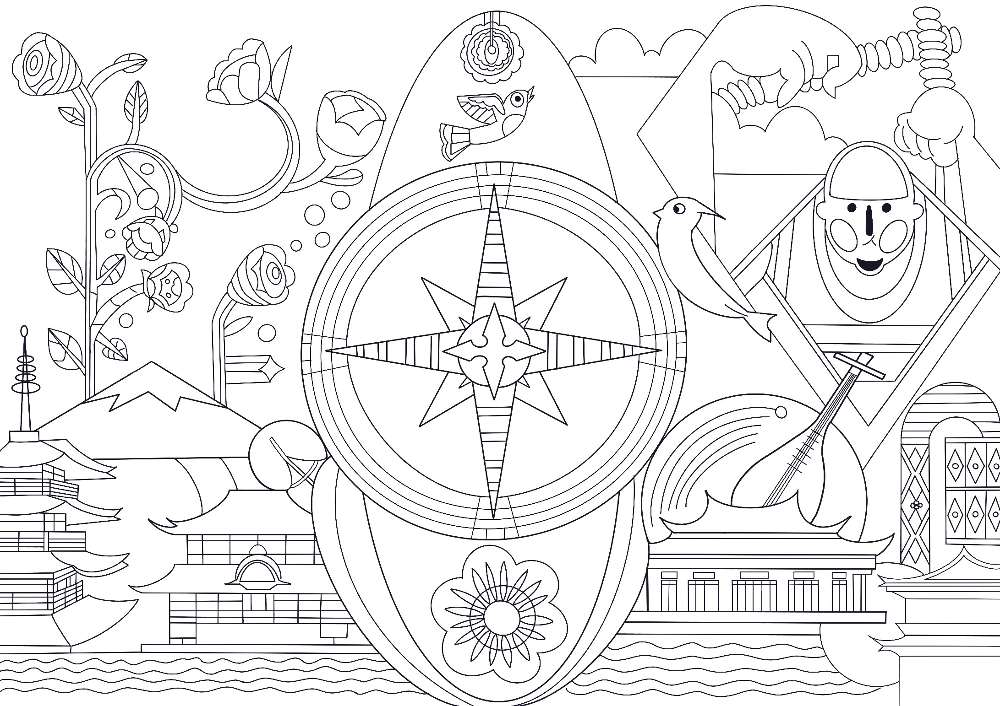

作品介绍
海上丝绸之路是古代中国与外国交通贸易和文化交往的海上通道，中国海上丝路分为东海航线和南海航线，其中主要以南海为中心。
南海航线起点主要是广州和泉州。以指南针作为三幅画面的主体物，运用图形设计的表现手法来描绘海丝之路上的建筑，人文风情，航行过程，以海洋波纹、飞鸟、植物花卉等作为辅助搭配。
营造丰富的视觉效果，使得画面看起来更加丰富多彩。


大广赛娃哈哈
AD钙奶——陪你酸酸甜甜，懂你可可爱爱
营养快线——早上喝一瓶，精神一上午